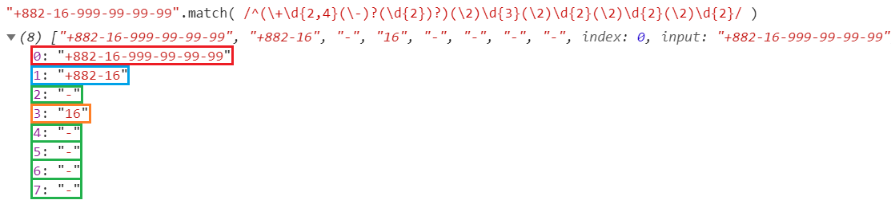
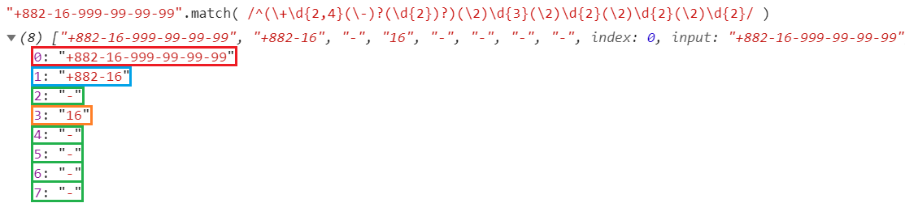

String y RegExp
¿Qué es String?
Un String es un tipo de dato primitivo que es inmutable y que se utiliza para representar y manipular una secuencia de caracteres.
Forma de declarar

Hay dos formas de declarar un String, una como objeto y otra como dato primitivo.
Si se declara como un objeto, hay que usar la palabra reservada new String() y para declararlo como un dato primitivo debemos de usar las comillas dobles.
Métodos
trimStart(): Método encargado de quitar los espacios en blanco del inicio de la cadena.

Métodos
endsWith(): Método que determina cuando una cadena termina con los caracteres de otra cadena, devolviendo true o false.

Métodos
concat(): Método usado para combinar dos o más cadenas.

Character classes
/\s/ Whitespace: nos permite capturar un espacio en blanco:

/\S/ Not whitespace: al revés que el caso anterior:
Quantifiers
/a(e|i)+)/ Alternation: finalmente el alternador que nos permite elegir entre múltiples posibilidades:

Groups & ranges
/(\n)/ Numeric reference: en razón al orden de los grupos, podemos referenciar el valor de un grupo para que se repita su comprobación en el patrón:
 

¿Preguntas?